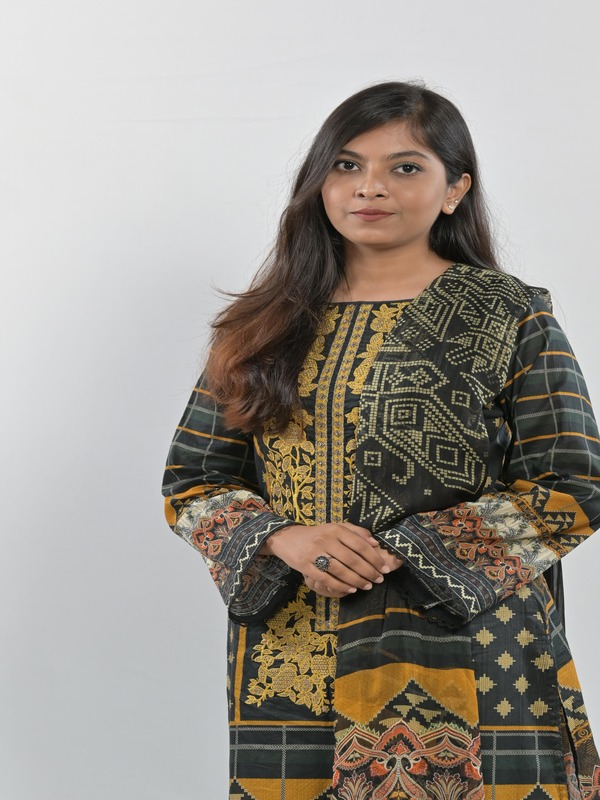

Business Analyst · Dhaka, Bangladesh
Project Coordination & Delivery
Results-driven Business Analyst with 4+ years driving digital transformation across enterprise software projects. I bridge the gap between business needs and technology — translating complexity into clarity.

The Person
I am an experienced Business Analyst with a strong background in project coordination and delivery. Currently at BRAC IT, I support the successful delivery of multiple enterprise software projects — coordinating cross-functional teams, managing project documentation, and maintaining clear stakeholder communication.
With a focus on Agile and Scrum methodologies, I excel at task tracking, risk identification, and managing change requests. I collaborate with developers, QA teams, and delivery managers to meet project goals on time and within scope. I have also contributed to high-quality documentation that supported CMMI Level 3 certification renewal.
In my previous role at Agami Limited, I led the B2B Quality Helpline project for British American Tobacco — improving service delivery, performance analysis, and team management while consistently exceeding KPIs. My ability to drive operational efficiency and manage client relationships has resulted in measurable business outcomes across every engagement.
Professional Path
July 2024 – Present
Business Analyst
BRAC IT · Dhaka
January 2023 – June 2024
Senior Executive – Customer Experience & Operations
Agami Limited · Dhaka
July 2021 – December 2022
Customer Experience Executive (E-commerce)
Agami Limited · Dhaka
April 2021 – June 2021
Executive, Master Data Management
Agami Limited · Dhaka
The Toolkit
Foundations
Bachelor of Business Administration
North South University, Dhaka
Finance (General) · 2017 – 2021 · GPA: 3.22
Developed strong foundations in financial analysis, business operations, and strategic decision-making, alongside active participation in debate and leadership roles.
Higher Secondary Certificate (HSC)
Dhaka Commerce College
Business Studies · 2014 – 2016
Core business studies curriculum building analytical and commercial thinking foundations.
Secondary School Certificate (SSC)
Monipur High School & College
Business Studies · 2004 – 2014
Early academic formation with a focus on commerce and analytical disciplines.
Recognition
Outstanding execution and leadership in the BAT B2B Quality Helpline project
Grand champion at the DCC inter-college debate circuit
DIUDS National Championship — top individual debater recognition
NSU Inter-Department Debate Championship — top 2 finish
NSU Debate Club (2017–2019) — organized national-level tournaments
Improved coordination and campaign execution driving measurable e-commerce growth
Continuous Learning
Excel Skills for Business: Essentials
Macquarie University
Power BI Fundamentals
Microsoft
Introduction to DAX in Power BI
Microsoft
Data Modeling in Power BI
Microsoft
Data Preparation in Power BI
Microsoft
Fundamentals of Digital Marketing
Google Digital Garage
Let's Connect
I'm always open to discussing new opportunities, project collaborations, or simply connecting with like-minded professionals. Whether you have a project in mind or just want to say hello — my inbox is open.